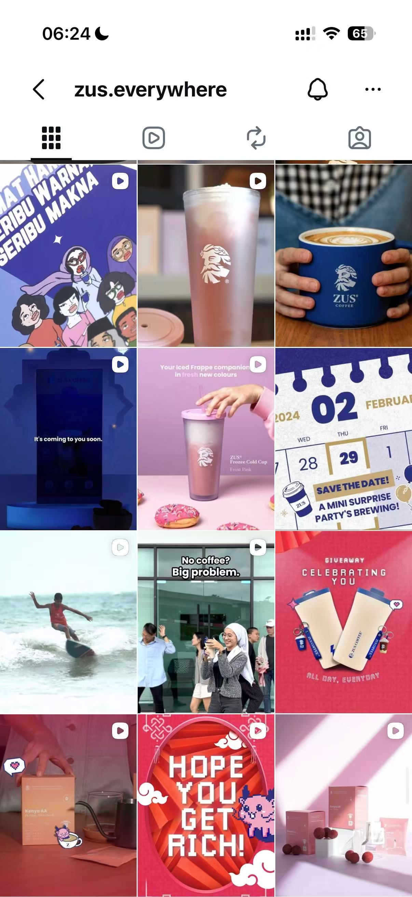
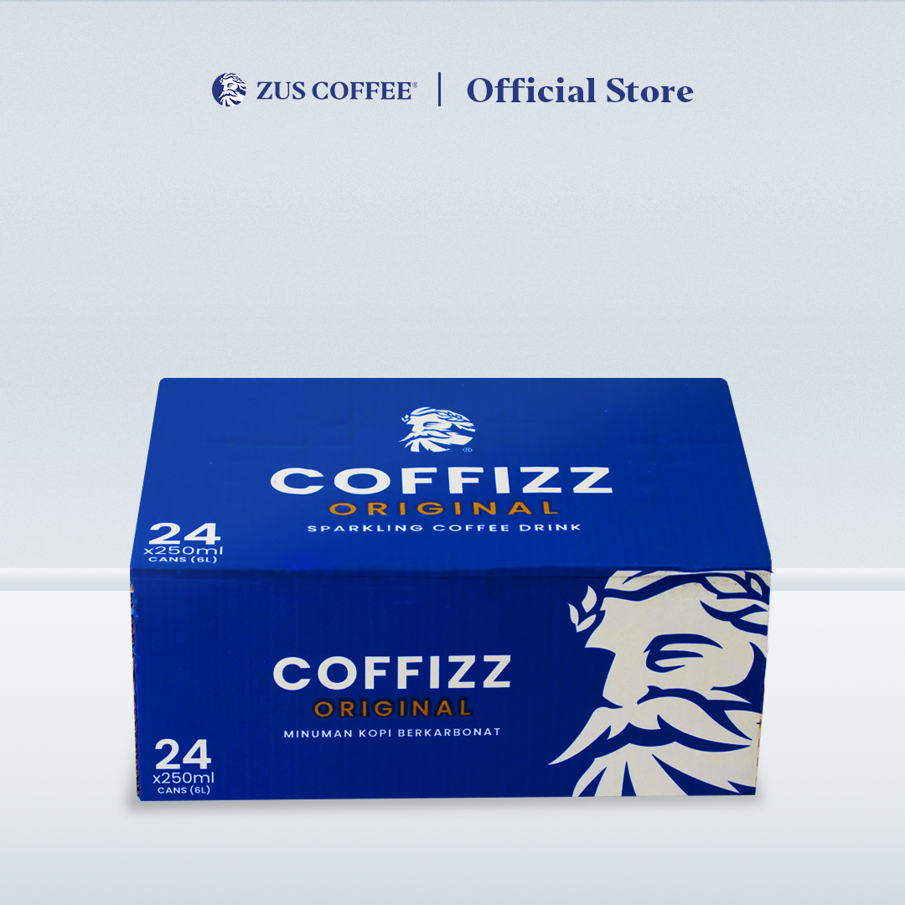

调研与选题
结合目标用户偏好、社媒反馈与竞品内容，整理新品可以突出哪些卖点。
PROJECT 04 / INSTAGRAM · ENGLISH CONTENT
参与新品内容调研、Instagram 拍摄剪辑与英文文案，配合线上首发及 FamilyMart 渠道传播。
COFFIZZ 产品资料图 · 非个人摄影作品 · 原图片来源 ↗
01 / 项目背景与职责
在 ZUS Coffee 担任海外新媒体运营实习生期间，我参与新品社媒传播，工作包括前期调研、内容制作与发布，以及渠道信息整理。
我的职责集中在具体内容工作与传播配合，不代表独立负责整个新品上市或零售渠道业务。
结合目标用户偏好、社媒反馈与竞品内容，整理新品可以突出哪些卖点。
参与拍摄、剪辑、英文文案、hashtag 与素材整理，配合发布排期。
配合线上首发及 FamilyMart 传播，每周跟踪内容表现，整理后续调整方向。
02 / 新品内容调研
前期调研围绕用户偏好、已有互动反馈与竞品内容展开，再把信息整理为选题和卖点参考。
关注产品信息、使用场景和购买说明，帮助后续内容确定表达重点。
结合目标用户偏好与社媒反馈，关注产品信息是否清楚、内容是否贴近使用场景。
从用户问题寻找表达重点参考竞品如何介绍新品、呈现产品和使用场景，以及怎样说明活动与购买信息。
观察具体内容，不直接照搬结合产品资料与传播安排，整理卖点、画面方向和英文文案需要说明的信息。
把调研信息带回内容准备调研信息用于支持下一条内容的选题、拍摄和英文表达，不作为竞品效果对比数据。
03 / Instagram 内容执行
参与完成50条 Instagram 内容发布，涉及选题、拍摄、剪辑、英文文案、hashtag 与素材整理。
不同内容的参与环节有所不同，具体工作围绕选题、制作、发布与复盘展开。
整理反馈与竞品内容
准备卖点和英文表达
参与画面与视频制作
配合核对素材与时间
整理文案、标签与素材
跟踪表现与互动反馈
新品是什么，有哪些值得关注的产品特点，以及本次发布需要说明的信息。
整理产品卖点，参与相关选题、拍摄剪辑与英文文案，配合素材准备。
产品画面与文案相互对应，产品名称、信息和发布主题保持一致。
产品可以出现在哪些日常情境中，让内容不只停留在包装和卖点介绍。
结合选题参与拍摄、剪辑与英文文案，整理不同版本和发布所需素材。
让产品、场景和文字围绕同一个主题，避免画面与文案各说各的。
新品的线上发布与线下渠道信息，让感兴趣的用户知道在哪里了解或购买。
配合线上首发及 FamilyMart 传播，协助整理宣传素材、门店信息与发布排期。
核对产品名称、渠道说明与发布时间，避免信息遗漏或前后不一致。
三类内容为工作说明的组织方式，不代表三组对照实验；未展示单条内容的后台数据或转化结论。

账号内容与产品资料
账号截图呈现了产品、生活场景和活动等内容。我的参与范围以本页说明的选题、拍摄剪辑、英文文案及发布配合为准。
材料说明：账号截图用于呈现整体内容风格；下方为产品资料图，并非个人摄影或设计作品。


04 / 渠道协同与内容复盘
配合线上首发和 FamilyMart 线下渠道传播，协助整理宣传素材、门店信息、购买入口与发布排期。
每周跟踪内容表现，累计完成15+次复盘，并根据互动反馈调整后续选题、内容形式与发布节奏。
配合整理产品与渠道信息，检查宣传素材和发布时间是否一致。
跟踪内容表现，整理互动反馈中值得进一步确认的问题。
结合内容表现与反馈，整理后续选题、内容形式和发布节奏的调整方向。
以下是问题处理思路，不是历史用户原话、真实数据对比或已经验证的优化效果。数据有变化时，先核对内容、时间与其他影响因素，再讨论调整。
用户具体询问哪个产品、哪个地区或哪类购买渠道，不直接把询问当作成交。
检查原帖是否说明购买渠道，以及现有门店或购买入口信息是否仍然准确。
在信息确认后补充渠道说明，并在后续相关内容中更清楚地呈现购买信息。
在相同观察时长下，查看可获取的触达和互动表现，避免只看某一个数字。
核对主题、形式、发布时间，以及是否有活动或额外推广等影响。
提出下一条内容的具体尝试，如调整开头或信息顺序，发布后继续观察，不提前承诺效果。
区分用户是在询问产品信息，还是表达个人偏好，不从少量评论推断全部用户。
回看原内容是否解释清楚，再核对产品资料，确认哪些信息可以补充。
把已确认的信息补充到文案或后续选题中，涉及不确定的问题先与团队确认。
05 / 工作结果
工作量以参与发布的内容条数和完成的复盘次数说明。粉丝增长单独作为账号整体结果展示，不归因于某一条内容或个人独立贡献。
涉及选题、拍摄、剪辑、英文文案、hashtag 与素材整理。
每周跟踪内容表现，根据互动反馈整理后续内容调整方向。
项目期账号整体变化，不对应个人独立带来的增长。
统计范围参与发布的内容条数、累计完成的复盘次数及项目期账号粉丝增长；原始后台明细不作公开展示。